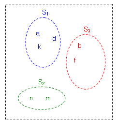
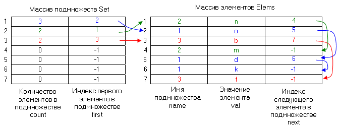
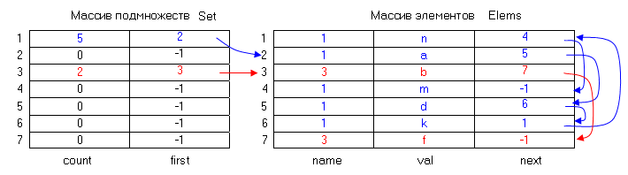
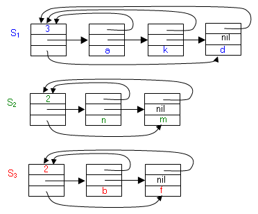
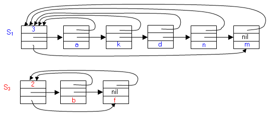

|
|
||||||
|
Система непересекающихся множеств на базе массива Система непересекающихся множеств на базе связных списков
В структуре данных "Непересекающиеся множества" n элементов организованы в объединение непустых непересекающихся множеств. Операции для структуры "Непересекающиеся множества":
Пример:  Систему можно представить в виде множества трех подмножеств { S1:{a, k, d}, S2:{n, m}, S3:{b, f} }. Система непересекающихся множеств на базе массиваДля реализации системы подмножеств объявим два типа данных - тип имен множеств и тип элементов множеств [1]. В качестве имен множеств удобно использовать целые числа. Если общее количество элементов всех подмножеств равно n, то можно использовать целые числа на интервале от 1 до n, как идентификаторы элементов подмножеств и использовать идентификаторы в качестве индексов в массиве. Тип имен элементов не так важен, поскольку это тип элементов массива, а не индексов. Но если необходимо, чтобы тип элементов множеств был отличным от числового, то необходимо выполнить отображение типа элементов в целые числа с помощью, например, хеш - функции. Каждое подмножество можно представить в виде отдельного списка. Списки для отдельных подмножеств можно хранить либо в массиве с индексными указателями. Для реализации системы подмножеств используются два массива - массив подмножеств и массив элементов подмножеств. Размерность массивов одинакова и равна n, исходя из предположения, что количество подмножеств может соответствовать числу элементов всех подмножеств. Пусть n = 7. Тогда для приведенного выше примера система непересекающихся множеств на базе массива подмножеств и массива элементов выглядит следующим образом. 
В массиве элементов все элементы отдельного подмножества связаны в список через индексные указатели (индексы следующих элементов). Значение индекса элемента, равное -1, означает значение nil. Также элементы снабжены именами подмножеств, которым они принадлежат. Это позволяет быстро определять принадлежность элемента определенному подмножеству в операции Find_Set(x). Отдельные подмножества оформлены в массиве подмножеств. Имя каждого подмножества (целое число) используется в качестве индекса в этом массиве. Для каждого подмножества задается индекс первого элемента в списке элементов, принадлежащих данному подмножеству, который расположен в массиве элементов. Кроме того для подмножества задается количество элементов в подмножестве. Это позволяет ускорить операцию объединения подмножеств - Union_Set (x, y). Операция выполняется путем присоединения списка одного подмножества к концу списка другого подмножества. Причем рекомендуется присоединять более короткий список к более длинному. Это сокращает обработку элементов присоединяемого списка, которые получают новое имя подмножества, соответствующее имени подмножества, к которому элементы присоединяются. После объединения подмножеств присоединенное подмножество в массиве подмножеств удаляется. Например, после операции Union_Set (a,m) система подмножеств в массиве выглядит следующим образом:
 Псевдокод операции создания множества Make_Set(x) с элементом x:Make_Set(x )
1.
2.
3. i ← 1 4. repeat 5. i ← i +1 6. until count [ Set[ i ] ] = 0
7.
j ←
h(x)
8. if name[ Elems [j]
]
9. then repeat 10. j ← (j +1) mod n 11. until name [ Elems [j] ] = 0 12. name[ Elems[ j] ] = i 13. val[Elems[j] ] = x
14.
next[ Elems
[j]
]
=
nil 15. count [ Set [i ] ] = 1 16. first [Set [i ] ] = j
17. return
i
Псевдокод операции определения множества, содержащего элемент x:Find_Set(x)
1.
2.
3. j ←
h(x)
4.
if val[ Elems
[j]
] 5. then repeat 6. j ← (j +1) mod n 7. until val[ Elems [j] ]= x 8. return name [ Elems [j]]
Псевдокод операции объединения множеств, содержащих элементы x и y:Union_Set (x, y)1. j ← Find_Set (x) 2. j ← Find_Set ( y) 3. if count[Set [i]] > count[Set [j] ] 4. then m ← first [Set [i]]
11.
if next[Elems
[m]] 12. then 5. repeat 6. m ← next[Elems [m]]
7.
until
next[Elems
[m]]
= nil
8. next[Elems [m]] ← first [Set [j] ] 9. k ← i 10 else m ← first [Set [j] ]
11.
if next[Elems
[m]] 12. then 13. repeat 14. m ← next[Elems [m]] 15. until next[Elems [m]] = nil 16. next[Elems [m]] ← first [Set [i]] 17. k ← j 18. m ← next[Elems [m]] 19. repeat 20 name[Elems [m]] ← k 21. m ← next[Elems [m]] 22. until m = nil 23. if i = k 24. then count[Set [i]] ← count[Set [i]] + count[Set [j]] 25. count[Set [j] ] ← 0 26. first[Set [j] ] ← nil 27. else count[Set [j] ] ← count[Set [j] ] + count[Set [i]] 25. count[Set [i]] ← 0 26. first[Set [i]] ← nil
28.
return k
Система непересекающихся множеств на базе связных списковВ структуре n элементов распределены на непустые списки на базе адресных указателей. Каждому подмножеству соответствует отдельный список [3].  Каждый элемент списка, то есть подмножества, содержит указатели на следующий элемент и на заголовок списка, который служит именем подмножества, которому принадлежит элемент. Для каждого списка в заголовке хранятся указатели на его первый и последний элементы, а также количество элементов в списке. Указатель на последний элемент нужен для добавления новых элементов в конец списка. Порядок элементов в списке может быть любым. Количество элементов в списке необходимо для того. чтобы при выполнении операции Union_Set присоединять более коротки список в конец более длинного списка. Операция Make_Set(x) создает список с единственным элементом x. Этот элемент будет содержать указатель на заголовок списка, то есть имя созданного подмножества. Операция Find_Set(x) возвращает указатель на заголовок списка, в котором находится элемент, как имя подмножества, которому принадлежит элемент x. Операция Union_Set (x, y) применима, если элементы x и y принадлежат различным подмножествам Sx и Sy. Операция заменяет подмножества Sx и Sy на их объединение Sx Sy. При этом выбирается представитель для Sx Sy - подмножество с большим количеством элементов. Меньшее множество из Sx и Sy включается в большее, то есть список меньшего подмножества присоединяется в конец списка большего подмножества. При этом в элементах присоединяемого списка меняется указатель на заголовок списка, то есть имя подмножества. Например, после операции Union_Set (a, m) система подмножеств выглядит следующим образом:

|
||||||
|
|